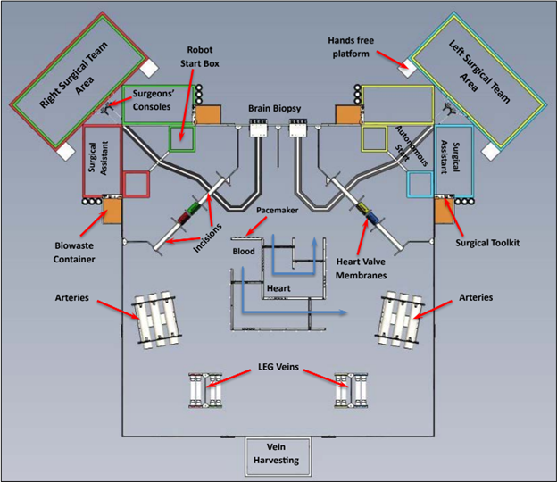
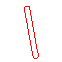
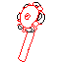
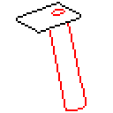
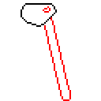

Incision Decision

- - -
Overview

- - -
SimBody
- - -
Brain

- - -
Heart
- - -
Blood Vessels

Overview
In BEST Incision Decision, robots work to perform minimally invasive surgeries inside a simulated human body (SimBody) containing simulations of various vital organs. For this challenge, robots must perform 10 surgical procedures, located within a simulated brain, heart, and major blood vessels. Robots start near the SimBody’s shoulders and enter the body through small incisions.
Surgeon & Surgical Assistant
- The Surgeon pilots the robot, while the Surgical Assistant sets up the robot for its autonomous routine and loads surgical instruments from the toolkit.
Surgeon's Console & Camera
- A camera is attached to the robot and used by the surgeon to operate in parts of the body with limited visibility.
Biowaste Container
- The Biowaste container is located next to the Surgical Assistant's Area. Damaged body tissue must be disposed of here after removal from the SimBody.
Surgical Toolkit
Contains all surgical instruments and supplies available for the robot to use during a match.
Biopsy Needle

- Used to complete the Brain Biopsy procedure.
Ablation Wheel

- Used to complete the Cardiac Ablation procedure.
Valve Clamp

- Used to complete the Faulty Valve Disposal and Artificial Valve Installation procedures.
Plaque Rake

- Used to complete the Artery Plaque Removal procedure.
Team-Built Instrument

- A custom instrument built by the team, can be used to replace one of the provided instruments.